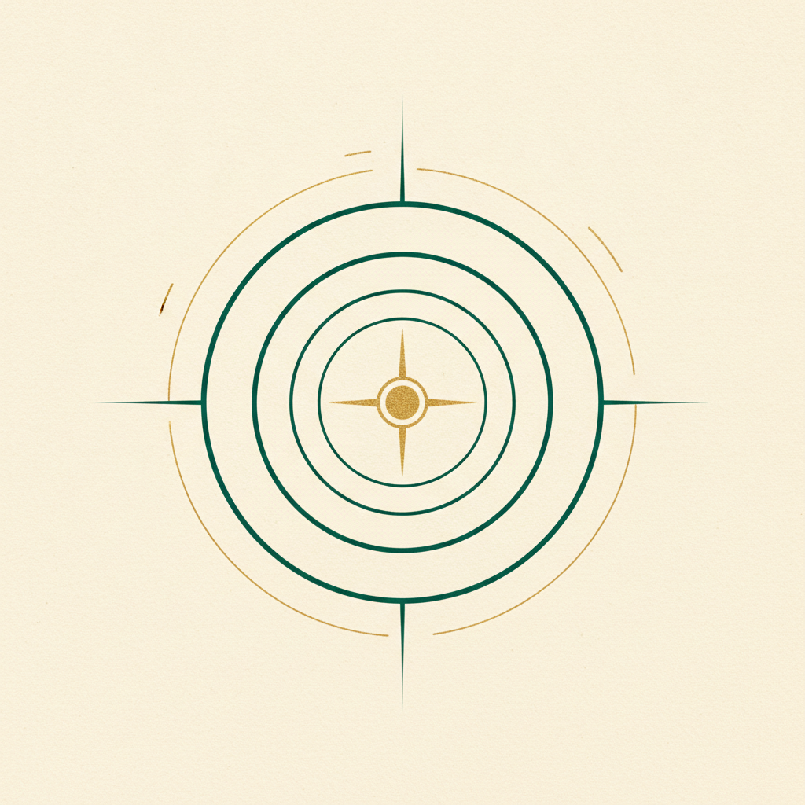
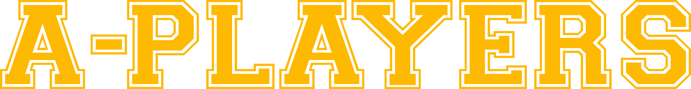
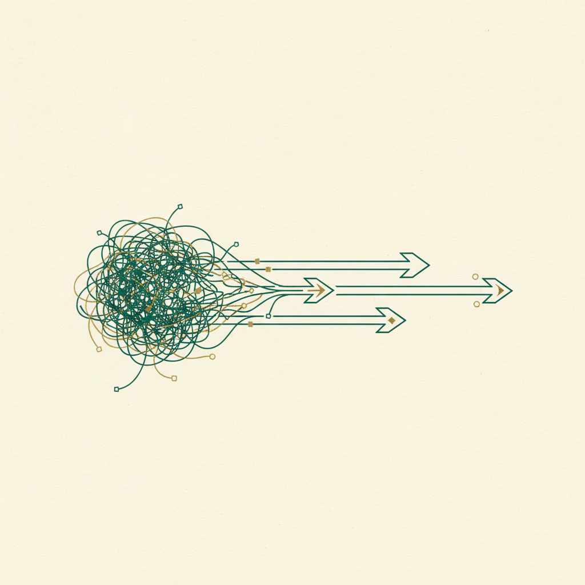
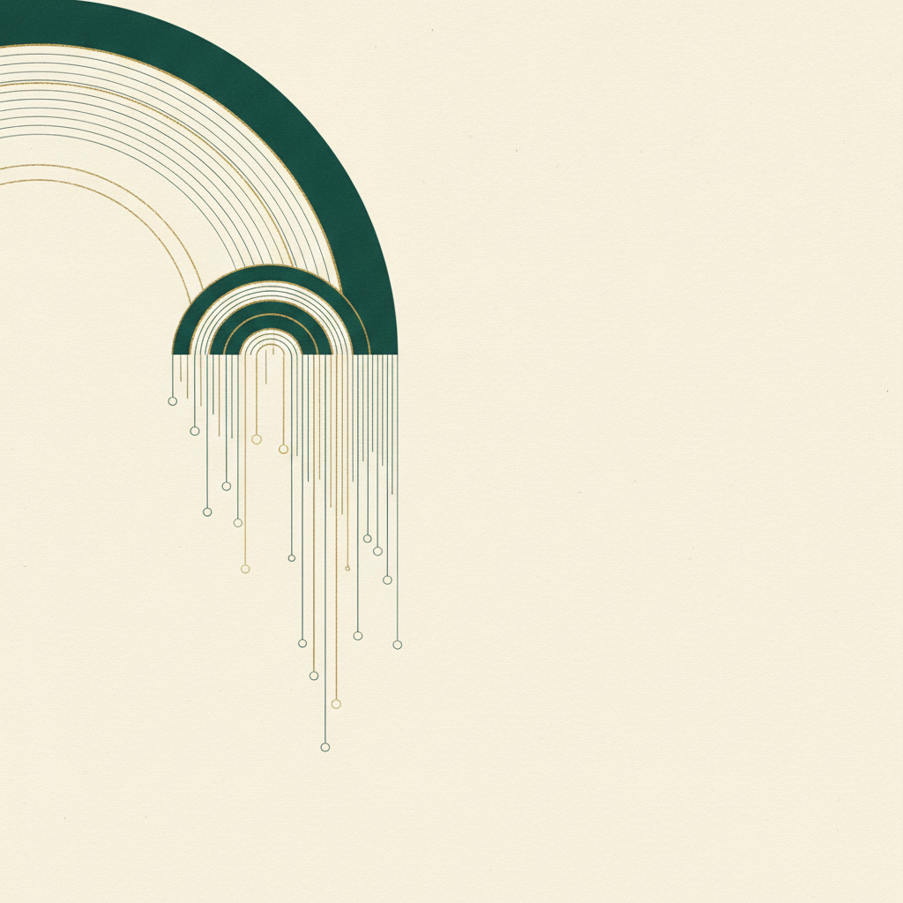
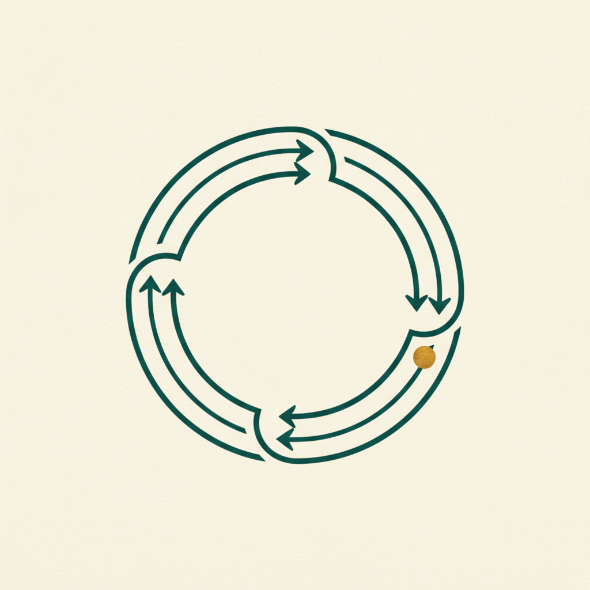
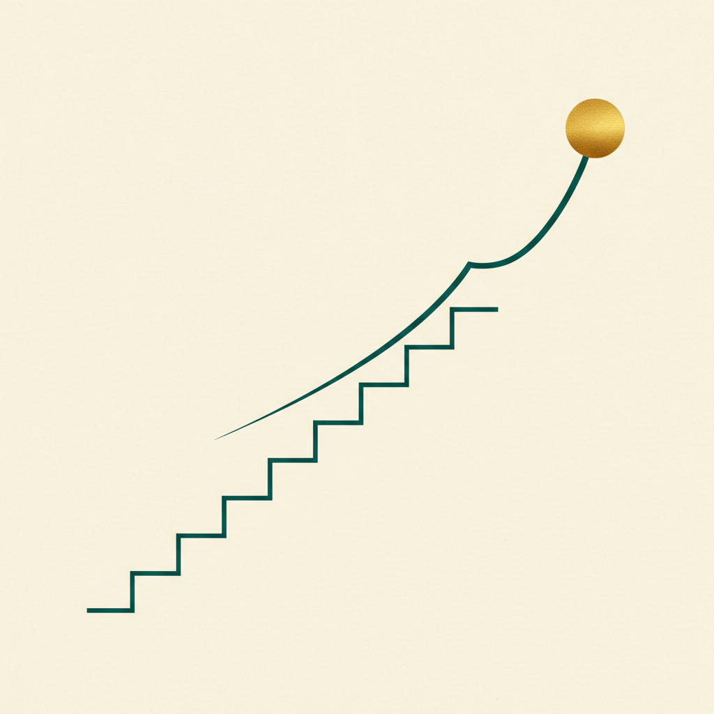

OGSM & OKR:
стратегия → квартальные проекты команды
Как из годовой стратегии собрать фокус, по которому каждый управленец лидирует свои проекты — и по ним же оценивается его перформанс. Не разовая активность, а квартальная операционная система роста.

Практикум A-PlayersOGSM & OKRБез системы целеполагания рост — это хаотичные действия.
Нас часто зовут, когда уже падает прибыль. И почти всегда причина одна: разбалансировка — непонятно, кто на какие педали жмёт и как каждый влияет на выручку. OGSM/OKR — это то, что превращает стратегию в фокус, прозрачность и управляемый перформанс.
Всё, что вы строили, сходится в целеполагание
Это не новая тема с нуля
Драйверы вы уже нашли через дебаг и ресёрч, приоритизировали через ICE. Сегодня — превращаем их в цели, которые вы лидируете.
Это часть управленческой рамки
OGSM/OKR встают в рамку навсегда — как квартальный цикл, а не разовая подготовка к стратсессии.
Маршрут воркшопа
Зачем система: боли без целеполагания
3 кита: OGSM · OKR · KPI
OGSM: что, как собирается, чек-лист
OKR: что, как писать O и KR, чек-лист
Как выбрать ручки: бенчмарк · ICE · прогноз
Каскад OGSM ⇄ OKR + цикл и ретро
Связь с перформансом (perf review → PDP)
Инструменты: трекер, дашборд + домашка
«Лебедь, рак и щука»
Люди годами работают в одной команде, но тянут результат в разные стороны. Спроси каждого «в какой компании ты работаешь и за счёт чего мы №1» — получишь разные ответы, иногда буквально разные бизнесы.

210 гипотез, которые не реализовать
На стратсессии команда из 13 человек сгенерила 210 гипотез за день. Это физически невозможно сделать. Большинство улетит на пыльную полку.
Задача — свести всё к ~10 главным ставкам, на которые реально инвестируем фокус и время.
«Непонятно, как сотрудник влияет на прибыль»
В правильной картине мира не существует сотрудника, который не влияет на выручку и прибыль. Кто-то больше, кто-то косвенно — но влияет каждый.
Прозрачная зона
У каждого — чёткие проекты, которые он лидирует, и метрика, за которую отвечает
Явная связь с деньгами
Видно, как проект человека тянет к выручке и чистой прибыли
Основа для перформанса
По этим проектам потом оценивается результат и строится развитие
Что даёт система целеполагания
Фокус
Из 210 идей — 10 ставок. Ресурс не распыляется
Прозрачность
У каждого чёткая зона ответственности и проекты
Синхрон
Вся команда смотрит в одну сторону
Перформанс
По проектам оценивается результат и бонусы
Три кита целеполагания
OGSM
Годовая стратегическая карта. Видение и как мы к нему идём. Мало кто про неё слышал.
OKR
Квартальные проекты роста. Ambition-цели с образом результата. Вы будете с ними жить.
KPI
Ежедневный контроль. То, что вы смотрите в моделях каждый день. Реалистичные, цель — 100%.
OGSM / OKR / KPI — в чём разница
| OGSM | OKR | KPI | |
|---|---|---|---|
| Горизонт | Год (видение 1–3) | Квартал (~3 мес) | День / неделя |
| Функция | Стратегическая карта, синхрон | Проекты роста, фокус | Контроль и мониторинг |
| Амбиция | Амбициозная, драйвит | Амбициозная (stretch) | Реалистичная, достижимая |
| Норма выполнения | — | ~70% — это норма | Целимся в 100% |
| Связь с бонусами | Косвенно | Всегда → мотивация | Через операционку |
Каскад: OGSM → OKR → KPI

OGSM — годовая стратегическая карта
Objective
Качественная амбициозная цель — куда идём за год. Видение одной фразой
Goals
Оцифрованные цели — на сколько именно. Выручка, маржа, доля рынка
Strategies
За счёт чего дойдём — ключевые направления/ставки года
Measures
Как измеряем движение по каждой стратегии — метрики
Как выглядит заполненный OGSM
3 вопроса, с которых начинается стратегия
Кто мы?
Что мы за компания на самом деле
Для кого и на каком рынке?
Кому и где мы играем
За счёт чего №1 в мире?
Наш источник преимущества
Как собирается OGSM — по шагам
Чек-лист качественного OGSM
- Команда одинаково отвечает на 3 вопроса стратегии
- Objective амбициозен и вдохновляет, а не «удержать текущее»
- Goals оцифрованы — есть конкретные числа и срок
- Strategies — 3–5 фокусов, а не «делаем всё»
- У каждой Strategy есть Measures (метрика движения)
- Из Strategies/Measures очевидно вырастают OKR отделов
Типовые ошибки OGSM
- Размытый Objective — «стать лучше», «расти» без образа и амбиции
- Goals без цифр — цели, которые нельзя измерить и проверить
- Стратегия «обо всём» — 15 направлений вместо 3–5 ставок → распыление
- Measures оторваны от Strategies — метрики есть, но не про движение по стратегии
- Собран в одиночку без синхрона — команда не разделяет и не исполняет
OKR — квартальные проекты роста
Objective
Куда движемся — качественная, амбициозная, вдохновляющая цель проекта на квартал.
Key Results
Как измерим — 2–4 измеримых результата. Достигли их → Objective выполнен.
Как выглядит заполненный OKR
Из драйверов — в 2–3 OKR
Вы уже нашли узкие места (дебаг) и практики их расшивки (ресёрч), приоритизировали через ICE. Топ-ставки становятся вашими OKR — не 210 гипотез, а фокус на главном.
70% выполнения — это норма, 100% не бывает
Если выполнили 100% — как и в предиктивной модели, это не хорошо: значит, не заложили амбицию, не оставили гэпа для роста.
Один проект — один ответственный-лидер
У каждого OKR-проекта — конкретная фамилия лидера. Именно он оркеструет вокруг себя рабочую группу и отвечает за образ результата.
Фамилия напротив проекта
Не «команда отвечает», а конкретный управленец лидирует
Драйвер роста в зоне
За каждым лидером — драйвер, который он развивает весь квартал
Основа перформанса
По этим проектам квартально оценивается его результат
Как писать Objective
- Качественный и вдохновляющий — задаёт направление, а не цифру
- Амбициозный — за него стоит бороться, он тянет вперёд
- Один фокус — одна ясная цель, а не «и то, и это»
- Привязан к OGSM — вытекает из стратегии года
[Глагол действия] + [что меняем] + [зачем/куда].
«Превратить продуктовый каскад из случайности в управляемую систему и поднять средний чек».
Как писать Key Results
- Измеримы — из состояния «было → стало», всегда цифра
- Это результаты, а не задачи — «CR 5%→9%», а не «провести 10 тренингов»
- Амбициозны — stretch, а не «точно сделаем»
- 2–4 на Objective — если 8, значит нет фокуса
✓ Результат: «средний чек 85к → 150к»
✕ Задача: «переписать скрипты, обучить отдел»
Задачи — это то, ЧТО делаем ради KR. Они живут в трекере проектов, не в OKR.
Чек-лист качественного OKR
- Objective вдохновляет и вытекает из OGSM
- Есть один ответственный-лидер (фамилия)
- 2–4 Key Results, все измеримы
- KR — результаты, а не список задач
- KR амбициозны (норма выполнения ~70%)
- У вас всего 2–3 OKR на квартал, а не 8
- Есть образ результата (кол-во + качество)
- Приземлён в мотивацию/бонусы
Типовые ошибки OKR
- KR = задачи — «сделать сайт», «нанять 3 менеджеров» вместо измеримого результата
- Слишком много OKR — 6–8 проектов на квартал → нет фокуса, всё провисает
- Не привязаны к OGSM — проекты сами по себе, стратегия сама по себе
- Нет владельца — «отвечает отдел» → не сдвинется
- Реалистичные, без амбиции — легко сделать 100% → нет роста (это KPI, не OKR)
- Не связаны с бонусами → становятся необязательными, «если что — не сделаем»
Ставки выбираем на доказательствах, а не на «мне кажется».
Прежде чем ставить проект в OKR, нужно доказать, что эта ручка вообще двигает результат — через бенчмарк и расчёт. Осознание «здесь мы отстаём, и этому есть доказательства» сильнее любой гипотезы в тысячу раз.
Шаг 2 из 8: выбор ручек на бенчмарках
Помните 8 этапов построения предиктивной модели? Шаг 2 — как выбирать, какие ручки крутить. Возвращаемся к нему: OKR берём именно из этого фильтра.
Разложить метрику
Дерево от выручки до опережающих показателей — где ручки
Сравнить с бенчмарком
Где мы ниже рынка/лучших практик — там потенциал (доказательство)
Оценить вес в деньгах
Сколько принесёт подтягивание ручки к бенчмарку
Двойной фильтр приоритизации
Сначала отсекаем недоказанное (нет бенчмарка/веса — на парковку), потом ранжируем оставшееся по ICE. Наверху — то, что идёт в OKR.
ICE-калькулятор гипотез
| Гипотеза (расшивка ручки) | Impact, ₽/год | I | C | E | ICE | Приоритет |
|---|---|---|---|---|---|---|
| Продуктовый каскад 5%→80% | +120 млн | 9 | 7 | 6 | 378 | 🥇 в OKR |
| Дожим базы недозакрытых | +40 млн | 7 | 8 | 8 | 448 | 🥇 в OKR |
| Новый канал: вебинары | +30 млн | 6 | 4 | 4 | 96 | парковка |
| Редизайн лендинга | +8 млн | 3 | 6 | 7 | 126 | позже |
Прогноз влияния — 3 сценария
По каждой топ-гипотезе строим матмодель: сколько денег принесёт. Три сценария снимают спор «а вдруг не сработает».
Не умеешь считать сам — дай цифры Claude
🤖 AI-челленджер ваших OKR
Вертикальный каскад: компания → отдел → человек
Одна цель — сверху донизу
| Уровень | Формулировка | Ответственный |
|---|---|---|
| OGSM (год) | Выручка ×1,8 за счёт роста чека и удержания базы | Первое лицо |
| OKR продаж | Каскад как система: доля дорогого тарифа 5%→80% | Комдир |
| OKR маркетинга | Трафик под премиум-сегмент: доля целевых лидов +25% | Дир. маркетинга |
| OKR РОПа | Команда перестроена: 100% аттестованы, скрипт внедрён | РОП |
OKR — это цикл, а не разовая активность
OKR не делается один раз под стратсессию. Это повторяющийся квартальный цикл, который встаёт в вашу управленческую рамку навсегда.
- Проект сделали быстрее → запускаем следующий
- Квартал закрыли → ретро, выводы, новый набор OKR
- Ежемесячно — корректируем по ходу

Вложенные горизонты планирования
Год
OGSM — стратегическая карта. Пересматриваем раз в год
Квартал
OKR — проекты. Новый набор каждый квартал
Месяц
Ретроспектива — корректируем OKR по ходу
Неделя
Спринты — задачи в трекере проектов, светофор
Ежемесячная ретроспектива — зачем
Квартал — это долго, чтобы ждать финала. Раз в месяц собираемся и смотрим: где OKR идёт по плану, где буксует, что скорректировать.
Что даёт ретро
- Ранние сигналы отклонения OKR
- Перераспределение ресурса на проседающее
- Фиксация «что сработало» → в плейбуки
- Материал для квартального perf review
Как проводим ретроспективу — по шагам
OKR ↔ Performance: полный цикл
Это ключевая мысль модуля: OKR — это не только про цели, это про оценку людей. Проекты, которые лидирует управленец, становятся основой его квартального перформанса.
Почему OKR всегда связан с бонусами
Внутри проекта — образ результата с количественным и качественным итогом. Он приземляется в мотивацию.
Как это выглядит
Пример из практики: не выполнил показатели по проекту → обнуляется до 50% квартального бонуса. Появляется реальное ощущение влияния на метрику.
Оценка перформанса на базе OKR
По итогам квартала сводим по каждому управленцу: результат по OKR (что сделал) × потенциал/навыки (как рос). Получаем позицию в матрице 9-box.
- 🟢 Высокий результат + потенциал → растим, даём больше
- 🟡 Средний → калибруем через PDP
- 🔴 Низкий + не калибруется → тяжёлый разговор
От Perf Review — к PDP и калибровке
Perf Review (квартал)
Что получилось по OKR, каких навыков не хватило
PDP (квартал)
Персональный план развития под выявленные пробелы
Калибровка (1-on-1)
Еженедельно/раз в две недели: что получается, какие нужны адвайзеры
OKR — фундамент оргструктуры и найма
Когда видны все проекты и их владельцы, всплывает ресурсное планирование: где не хватает капасити.
- Видно, кто объективно не вытянет объём → сигнал к найму
- Видно, где проектов больше, чем людей → приоритизация
- Это забота о команде, а не только про цифры

Трекер недельных проектов
| Проект (OKR) | Лидер | W1 | W2 | W3 | W4 | W5 | W6 |
|---|---|---|---|---|---|---|---|
| Продуктовый каскад 5%→80% | Комдир | ||||||
| Дожим базы недозакрытых | РОП | ||||||
| Трафик под премиум-сегмент | Маркетинг | ||||||
| Аттестация команды по скрипту | РОП |
Недельный цикл в трекере
Проектный дашборд поверх трекера
Единый стек внедрения
Одна связанная система: стратегия превращается в проекты, проекты — в недельные задачи, задачи — в статистику, статистика — в ретро и оценку людей. Круг замыкается и запускается снова.
Запускаем подготовку к стратсессии
- Сделай копию рабочей тетради (вкладки 0–8)
- Заполни свой столбец: паспорт отдела, итоги года с цифрами, метрики + глоссарий
- Карта процесса AS-IS + топ-5 горлышек с масштабом потерь
- Черновик OGSM (первое лицо) — Objective → Goals → Strategies → Measures
- Черновик Q1-OKR отдела — 2–3 проекта, привязанных к OGSM
- Прогони OKR через AI-челленджер и ICE-калькулятор
Что принести на разбор
- Заполненные вкладки 1–5 своего отдела (с цифрами)
- Черновик OGSM компании
- 2–3 черновых Q1-OKR с образом результата
- ICE-таблица топ-гипотез с прогнозом в деньгах
- Один проект заведён в трекер с задачами недели
- Вопросы на разбор со мной (запись через календарь)
 Итог модуля
Итог модуля
OKR — ваша квартальная
операционная система роста
Стратегия → проекты, которые вы лидируете → недельные спринты → ретро → оценка перформанса → развитие. Не разовая активность под стратсессию, а цикл, который крутится и двигает результат каждый квартал.